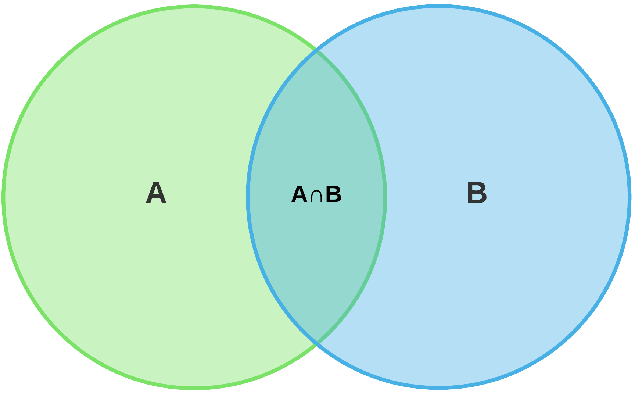
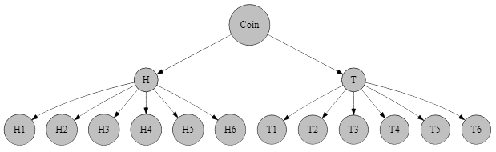
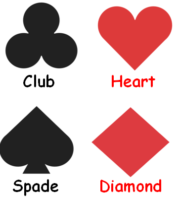

Probability
Invalid Date
Important concepts
- Trial
- Experiment
- Sample space
- event
Trial vs Experiment
Three Definitions
Classical
\(P (A) = \frac{n(A)}{n(S)}\)
Relative frequency
\[\lim_{n(S) \to \infty} \frac{n(A)}{n(S)}\]
Axiomatic
Three axioms
Say, S is sample space and A is an event
- \(0 \le P (A) \le 1\) (NOT \(P(A) \ge 0\))
- At least one of S will occur. P (S) = 1; Certain event.
- \(P(A_1 U A_2 U ... U A_n)=P(A_1) + P(A_2) + ... + P(A_n)\) or
- \[P\left(\cup _{i=1}^{\infty }E_{i}\right)=\sum _{i=1}^{\infty }P(E_{i})\]
Permutaion vs Combination
There are 15 cricketers in BD preliminary team. We got to select 11. C or P?
- Where is P used?
Mutually (non)Exclusive Formula
Mutually exclusive \(\downarrow\)
\(P(A \cup B\cup C) = P(A)+P(B)+P(C)\)
Mutually non-exclusive \(\downarrow\)
\(P(A \cup B) = P(A)+P(B) - P(A \cap B)\)
Venn Diagram
\(A \cap B\) came twice in 2nd formula

Conditional Probability
\(P(A|B) = \frac{P(A \cap B)}{P(B)}\)
\(P(B|A) = \frac{P(A \cap B)}{P(A)}=\frac{P(A|B) \cdot P(B)}{P(A)}\)
- \(\frac{P(A|B)}{P(B|A)}=?\)
- \(P(A \cap B)=?\)
- When are A & B independent?
\(P(A \cup B)\)
\(P(A \cap B') = P(A) - P(A \cap B)\) why?
- \(A = (A \cap \bar B) \cup (A \cap B)\)
- \(P(A) = P(A \cap \bar B) + P(A \cap B)\)
- Venn
Dependency and Mutual Excluvity
- If mutually exclusive \(\rightarrow\) dependent.
- If not exclusive \(\rightarrow\) dependent or independent
- Independent if \(P(A \cap B) = P(A) \cdot P(B)\)
- If mutually exclusive \(\rightarrow P(A \cap B) = 0 \ne P(A) \cdot P(B)\), so dependent
Dependency and Mutual Excluvity Example
S = {1,2,3,4,5,6}
A = {1,3,5}, B = {2,4,6}
\(P(A \cap B) = 0 \ne P(A) \cdot P(B)\)
A = {1,3,5}, B={1,3,4,6} \(\rightarrow\) mutually not exclusive
Check if \(P(A \cap B) = P(A) \cdot P(B)\)
Some theorems
- \(P(A) + P(\bar A) =1\) (prove)
- \(\sum_{i=1}^k P(A_i) = 1\)
- \(P(\bar A\cap \bar B) = P(\overline{A \cup B}) = 1- P(A \cup B)\) (Venn)
- If A & B are independent, are \(\bar A\) & \(\bar B\) independent? (Prove by an example)
Types of Problems
- Miscellaneous
- Coin
- Die
- Playing Card
- At Once vs One by One
- Box
- Conditional
- Set Theoretic
- Digit
Miscellaneous
Misc Problem #01
What is the probability that in a leap year, there are 53 Fridays?
- In a leap year, there are 366 days, i.e, 52 weeks and 2 days. In each week is a Fridays, so there are no less than 52 Fridays. The remaining two days could be:
- (Sat, Sun); (Sun, Mon); (Mon, Tue); (Tue, Wedn); (Wedn, Thu); (Thu, Fri); (Fri, Sat) = 7
- Total possible outcome = 7 and favorable outcomes = 2
- \(P = \frac{2}{7}\)
Misc Problem #02
Out of the natural numbers 10 through 30, a number is chosen randomly; what is the probability that the number is
- a prime number
- a prime number or multiple of 5
- a prime number or an odd number
- not a perfect square
Misc Problem #03
What is the probability that the product of three positive integers chosen from 1 through 100 is an even number?
- Three possible cases
- All three are even
- Two odd and one even number
- Two even and one odd
- \(P=\frac{^{50}C_3}{^{100}C_3}+2 \times \frac{^{50}C_2 \times ^{50}C_1}{^{100}C_3}\)
r round(choose(50,3)/choose(100,3)+2*choose(50,1)*choose(50,2)/choose(100,3),2)
Coin And Die Problem
Tossing A Coing Twice
| First Coin | |||
|---|---|---|---|
| H | T | ||
|
Second Coin |
H | HH | HT |
| T | TH | TT | |
Tossing a coin twice is equivalent to tossing two coins at once
What is the probability that
- The Head appears at the first draw?
- At least one Head appears?
- Less than two Heads appear?
- Only Tails appears?
Probability Tree
A coin and a die are thrown

Flipping A Coin Thrice
| First Two Flips | |||||
|---|---|---|---|---|---|
| HH | HT | TH | TT | ||
| Third Flip | H | HHH | HHT | HTH | HTT |
| T | THH | THT | TTH | TTT | |
What is the probability that
- All three are Heads?
- There are more than one Head?
- The second draw gives a Head?
- The third draw does not give a head?
- The first draw gives a Tail but the the Draw does not?
- At most one Head appears?
Flinging Two Dice at Once
|
Tossing Two Dice at Once |
First Die | ||||||
|---|---|---|---|---|---|---|---|
| 1 | 2 | 3 | 4 | 5 | 6 | ||
|
Second Die |
1 | 1,1 | 1,2 | 1,3 | 1,4 | 1,5 | 1,6 |
| 2 | 2,1 | 2,2 | 2,3 | 2,4 | 2,5 | 2,6 | |
| 3 | 3,1 | 3,2 | 3,3 | 3,4 | 3,5 | 3,6 | |
| 4 | 4,1 | 4,2 | 4,3 | 4,4 | 4,5 | 4,6 | |
| 5 | 5,1 | 5,2 | 5,3 | 5,4 | 5,5 | 5,6 | |
| 6 | 6,1 | 6,2 | 6,3 | 6,4 | 6,5 | 6,6 | |
What is the probability that
- The first numbers is odd?
- The summation of numbers in two draws is a prime number?
- Both numbers are same?
- The second number is bigger?
- Total of the numbers is 8
- Sum of numbers is greater than 5
Dependency of Coin-Die
Are the events getting head from a coin toss and even numbers from a die independent?
What does the commons sense tell us?
- Depends on setup. If simultaneously, YES/NO.
- Different setup \(\rightarrow\) NO (\(P(A \cap B) = UNDEFINED\))
- A = Head, B = Even
- \(P(A) = \frac 6 {12} = \frac 1 2\)
- \(P(B) = \frac 1 2\)
- \(P(A \cap B) = \frac 3 {12} = \frac 1 4\)
Addition / Multiplication
REVIEW THIS (might have a mistake)
- There 4 red and 3 white balls. Draw 2 balls at once. What is probability that both are same color? What if you draw one by one (with replacement-WR)? What is without replacement (WoR)?
- At once \(\rightarrow\) [RR] or [WW]
- \(\frac {^4C_2} {^7C_3}+ \frac {^3C_2} {^7C_3}\)
- One by one: R \(\rightarrow\) R or W \(\rightarrow\) W
- \(\frac {^4C_1} {^7C_3} \times \frac {^4C_1} {^7C_3}+\frac {^3C_1} {^7C_3} \times \frac {^3C_1} {^7C_3}\)
And/Or vs \(+/ \times\)
- P(X solves a problem) = 0.25
- P(Y solves a problem) = 0.30
- And \(\rightarrow\) Multiply
- Or \(\rightarrow\) Add
- P(Both solve) \(\rightarrow\) P(X and Y solve): \(P(X \cap Y) = P(X) \times P(Y)\)
- P(X or Y solves): \(P(A \cup B) = P(A) + P(B) - P(A \cap B)\)
Playing Card
Concepts (Playing Card)

Each rank has 13 cards.
- Ace (A)
- King (K)
- Queen (Q)
- Jack (J)
- Numbers: 2, 3, 4, 5, 6, 7, 8, 9, 10
- 4+9 numbers = 13 cards.
Card Problem #01
3 cards are drawn from a pack of 52 cards. What is the probability that they are all Kings?
There are 4 Kings. We’ve to draw 3 cards.
- \(P(K) =\frac{^4C_3}{{^52}C_3}\)
Card Problem #02
If a card is drawn from a deck of 52 cards with 4 aces, what is the probability that an ace will not show up?
Let, P(A) = Ace appears
- \(1-P(A)\)
- \(1- \frac{4}{52}=1-\frac 1 {13}\)
- Directly \(\frac{48}{52}\)
Card Problem #03
Two cards are drawn with replacement; What is the probability that they are
- Kings of same color
- Kings of different color
- Not Kings at all
- \(P(BUR) =P(B)+P(R)\)
- \(\frac{^2C_1 \times ^2C_1}{^{52}C_1\times ^{52}C_1}+\frac{^2C_1 \times ^2C_1}{^{52}C_1\times ^{52}C_1}\) Why not \(^{52}C_2\), \(^4C_2\)
- \(1-P(B \cup R)\)
- \(P(K)= \frac{^4C_1 \times ^4C_1}{^{52}C_1\times ^{52}C_1}\)
- \(1-P(K)\)
Card Problem #04
A card is drawn from a pack of 52 cards. What is the probability that it is
- an Ace
- A Spade
- A Hearts or a King
Card Problem #05
A card is drawn from each of two well-shuffled pack of cards. Find the probability that at least one of them is an ace.
Let,
A = Ace from 1st pack
B = Ace from 2nd pack
\(P(A \cup B)=?\)
\(P(A) = \frac{^4C_1}{^{52}C_1}\)
\(P(B) = P(A)\)
\(P(A\cap B) = P(A) \times P(B)\)
- \(P(A \cup B)=P(A)+P(B) - P(A \cap B)\)
Box
Box Problem #01
In a box, there are 5 blue marbles, 7 green marbles, and 8 yellow marbles. If two marbles are randomly selected, what is the probability that both will be green or yellow, if taken
with replacement
without replacement
- Correct or not: \(\frac{^7C_2}{^{20}C_2}+\frac{^8C_2}{^{20}C_2}\)
- \(\frac{^7C_1 \times ^7C_1}{^{20}C_1 \times ^{20}C_1}+\frac{^8C_1 \times ^8C_1}{^{20}C_1 \times ^{20}C_1}\)
- Without replacement: \(\frac{^7C_1 \times ^6C_1}{^{20}C_1 \times ^{19}C_1}+\frac{^8C_1 \times ^7C_1}{^{20}C_1 \times ^{19}C_1}\)
Box Problem #02
There are some balls in a box as below
| Color | # Balls |
|---|---|
| White | 3 |
| Black | 6 |
| Red | 7 |
| Green | 5 |
| Yellow | 4 |
| Violet | 9 |
| Blue | 8 |
If three balls are drawn at random, what is the probability there are all red or green?
- \(\frac{^7C_3}{^{42}C_3}+\frac{^5C_3}{^{42}C_3}\)
r round(choose(7,3)/choose(20,3)+choose(5,3)/choose(20,3),3)
Box Problem #03
There are 9 red and 7 white balls in a box. 6 balls are picked randomly. What is the probability that 3 balls are red and 3 balls are white?
Which one is the answer?
- Whatever we draw together will be in \(r\) in \(^nC_r\)
- Answer: \(\frac{^9C_3 \times ^7C_3}{^{16}C_6}\)=
r round(choose(9,3)*choose(7,3)/choose(16,6),3)
Transfer Items
Transfer Items 01
An urn contains 6 white and 8 black balls. Another urn contains 5 white and 10 black balls. One balls is transferred from the first urn to the second, and one ball is drawn from the latter. What is the probability that it is a white ball?
- P(White is transferred)+P(Black is transferred)
- \(\frac {6}{14} \times \frac{6}{16} +\frac{8}{14} \times \frac{5}{16}\)
Conditional Probability
Conditional Formula
Bayes Theorem
\(P(B|A)=\frac{P(A \cap B)}{P(A)}\)
Law of Total Probability
See also this table
\({\displaystyle P(A)=\sum _{i}^nP(A\cap B_{i})}\)
or, alternatively,
\({\displaystyle P(A)=\sum _{i}^nP(A\mid B_{i})P(B_{i})}\)
Conditional Problem # 01
Probability that it rains today is 40%, that tomorrow is 50%, and that on both days is 30%. If it rains today, what is the probability that it would rain tomorrow?
- \(P (T) = 0.4, P(M) = 0.5, P(T\cap M)=0.3\)
- \(P(M|T)=?\)
- \(P(M|T)=\frac{P(T\cap M)}{P(T)}\)
- \(\frac{0.3}{0.4}\)
Conditional Problem # 02
In a college, there are 100 students, of whom 30 play football, 40 play cricket, and 20 play both. A student is selected randomly. If he plays cricket, what is the probability that he plays football?
\(P(F)=0.3\)
\(P(C)=0.4\)
\(P(F \cap C)=0.2\)
\(P(F|C)=?\)
- \(P(F|C)=\frac{P(F \cap C)}{P(C)}=\)
r round(0.2/0.4,2)
Conditional Problem # 03
\(S=\) {r 1:10}
If a number is picked randomly and known it an even number, What is the probability that it is more than 6?
Conditional Problem # 04
In a city of 1 million inhabitants let there be 100 terrorists and 999,900 non-terrorists. The city has a facial recognition software. If the camera scans a terrorist, a bell will ring 99% of the time, and it will fail to ring 1% of the time. If the camera scans a non-terrorist, a bell will not ring 99% of the time, but it will ring 1% of the time.
If the bell rings, what is the probability that a terrorist is caught?
About 99 of the 100 terrorists will trigger the alarm—and so will about 9,999 of the 999,900 non-terrorists. Therefore, about 10,098 people will trigger the alarm, among which about 99 will be terrorists. So, the probability that a person triggering the alarm actually is a terrorist, is only about 99 in 10,098, which is less than 1%
Selection
Selection Problem # 01
Cup 01 contains 2 black, 3 red, and 1 pink ball. Cup 2 contains only 1 red ball. A cup is selected randomly. Next, a ball is randomly chosen from that randomly selected cup and placed into the other cup. A ball is then drawn randomly from that second cup. Find the probability that the last ball drawn is a pink one.
- 3 possible cases
- 1st cup \(\rightarrow\) pink ball \(\rightarrow\) pink ball from 2nd cup
- 1st cup \(\rightarrow\) non-pink ball \(\rightarrow\) pink ball from 2nd cup
- 2nd cup \(\rightarrow\) red ball \(\rightarrow\) pink ball from 1st (other) cup
- \((\frac 1 2 \times \frac 1 6 \times \frac 1 2 )+ (\frac 1 2 \times \frac 5 6 \times 0) + (\frac 1 2 \times 1 \times \frac 1 7)\)
Selection problem # 02
If a senility researcher discovered that in a population of healthy and diseased elderly people, 14% of the people had senile dementia, 63% had arterioplerotic cerebral degeneration, and 11% had both. What is the probability that a person not having arterioplerotic cerebral degeneration has senile dementia?
Selection problem # 03
A candidate applied for three posts in an industry, having 3, 4, and 2 candidates respectively. What is the probability of getting a job by that candidate in at least one post?
\(P(F)+P(S)+P(T)-P(F\cap S)-P(S\cap T)-P(F\cap T)+P(F\cap S \cap T\)
One-by-one Or Not
A pot contains 3 white, 4 red, and 5 blue balls. Three balls are drawn at random. Find the probability that the balls are
- different colors
- same colors
- WRB \(\to \frac{^3C_1 \times ^4C_1 \times ^5C_1}{^{12}C_3}\)
- WWW + RRR + BBB \(\to \frac{^3C_3}{^{12}C_3}+\frac{^4C_3}{^{12}C_3}+\frac{^5C_3}{^{12}C_3}\)
- What if the balls are drawn one by one?
Set Theoretic
Concept
Formulae
Think Why are they so?
- \(P(A\cap B)=P(A)\times P(B)\), if A & B are independent (prove from Bayes theorem)
- \(P(A\cup B)=P(A)+P(B)-P(A\cap B)\)
- \(P(A\cap \bar B)=P(A)-P(A\cap B)\)
- \(P(A|\bar B)=\frac{P(A \cap \bar B)}{P(\bar B)}=?\)
- Also recall De Morgan’s Laws
Set: Multiple Union
\(P(A \cup B \cup C) = P(A)+P(B)+P(C)-P(AB)-P(AC)-P(BC) +P(ABC)\)
- \(P(A \cup B \cup C) = 1 - P(\overline{A \cup B \cup C}) = 1-P(\bar A \cap \bar B \cap \bar C) =1-P(\bar A) \cdot P(\bar B) \cdot P(\bar C)\)
Set Problem # 01
The probability of Ronaldo scoring a goal is 0.4 and that of Messi 0.38. What is the probability that- Both Score
- Only Ronaldo scores
- Only Messi scores?
- At least one of them scores
- Only one of them scores
- At most one of them scores
P(R) = 0.4 and P(M) = 0.38
- \(P(R \cap M)=P(R) \times P(M)\) (since independent)
- \(P(R \cap M')=?\)
- \(P(R' \cap M)=?\)
- \(P(R \cup M)\)
- \(P(R \cap M')+P(R' \cap M)\)
- Same to 5
Set Problem # 02
\(S_1\)={1,3,4,7,9,20}
\(S_2\)={r 12:18}
If a number is randomly chosen from each set, what is the probability that a prime number comes from \(S_1\) and a multiple of 3 from \(S_2\)?
Say, P = Prime from \(S_1\) M = Multiple of 3 from \(S_2\).
What do we need to find out?
- \(P(P) = \frac 3 7\) and \(P(M)=\frac 3 7\)
- Answer: \(P(P \cap M) = P(P) \cdot P(M)\)
Set problem # 03
\(P(A\cap B)= \frac 1 3, P(A \cup B) = \frac 5 6, and \space P(A) = \frac 1 2\)
Find \(P(B)\) and \(P(B^c)\)
Set problem # 04
\(P(A)= \frac 1 2, P(B) = \frac 1 5, \text{and} \space P(A|B) = \frac 3 8\)
Find \(P(A \cap B), P(B|A)\), and \(P(A \cup B)\)
\(P(B|A) = \frac {P(A \cap B)}{P(A)}\)
\(P(A|B) = \frac {P(A \cap B)}{P(B)}\)
\(P(A \cap B) = P(A|B) \times P(B)\)
\(\therefore P(B|A) = \frac{P(A|B) \times P(B)}{P(A)}\)
Set problem # 05
\(P(A)=\frac 1 4, P(B) = \frac 2 5, P(A\cup B) = \frac 1 2\); A & B are not mutually exclusive. Find
Questions
Answers
- \(P(A)+P(B)-P(A \cup B)\)
- \(P(B) - P(A \cup B)\)
- Refer to 2
- \(P(\overline{A \cup B}) = 1 - P(A \cup B)\)
- As is 4
- \(P(\bar A) + P(B)-P(\bar A \cap B)\)
- \(\frac{P(A \cap \bar B)}{P(\bar B)}\)
- \(\frac{P(\bar A \cap \bar B)}{P(\bar B)}\)
Set-Examples
Set-practical 01
Out of 200 People, 50 read The Observer, 40 read the Inqilab, and 10 read both. If one person is selected, what is the probability that he
- reads any paper
- reads The Observer if he reads Inqilab
Set-practical 02
Among 800 students, 160 fail in English, 80 in Math, and 40 in both. A student is elected at random. Find the probability that s/he
- Failed in English but passed in Math
- Passed only one subject
- Failed in none
- Passed at best one subject
- \(P(E\cap S')\)
- \(P(E\cap S')+P(E' \cap S)\)
- \(P(E\cap S)' = \frac{n(E')+n(S')-n(E'\cap S')}{n(S)}\)
- Fail both + Fail in one = 0.2 + 0.05
Digit Problems
Even-Odd
Two digits are taken with replacement from 1,2,3,4 to form a number. What is the probability that the number is
- even
- odd and divisible by 3
Solve in two ways
- □ □ \(\frac{^4C_1 \times 2}{4 \times 4}\) or form numbers (12,14,22,24,32,34,42,44)
- Numbers: 11, 13, 21, 23, 31, 33, 41, 43 \(\rightarrow \frac {2}{16}=\frac 1 8\)
Even Numbers
Five-digit Numbers are made using the digits 5, 3, 2, 6, 0.
P(Even) = ?
□ □ □ □ □
- \(5th \rightarrow 2P_1\) (2 or 6)
- \(1st \rightarrow 3P_1\)
- Others: \(3! \rightarrow 3P_1 \times 3! \times 2P_1\)
- 0 in 5th \(\rightarrow 4!\)
- Final \(\frac{3P_1 \times 3! \times 2P_1 + 4!}{6!-5!}\)
- Or \(\rightarrow 2 (1 \times 4!-3!)+4!\) (using 2, 6 separately)
Real Number from (0,10) & (0,100)
- A real number - rational or irrational - between 0 and 10 is chosen at random. What is the probability that it is greater than 5?
- A real number - rational or irrational - between 0 and 100 is chosen at random. What is the probability that it is greater than 25?
- What is the probability that the square of a random number from (0, 10) is greater than 25?
- What is the probability that the square root of a random number from (0, 100) is greater than 5?

www.statmania.info | Abdullah Al Mahmud | Press space or arrow to change slides